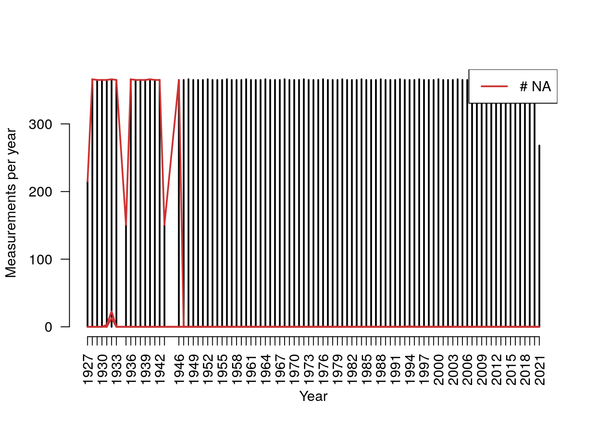
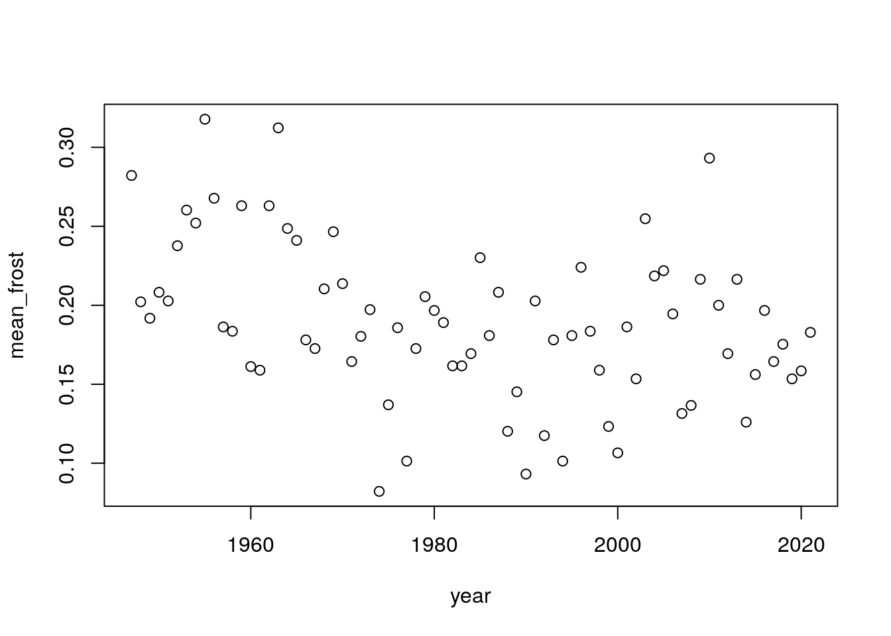
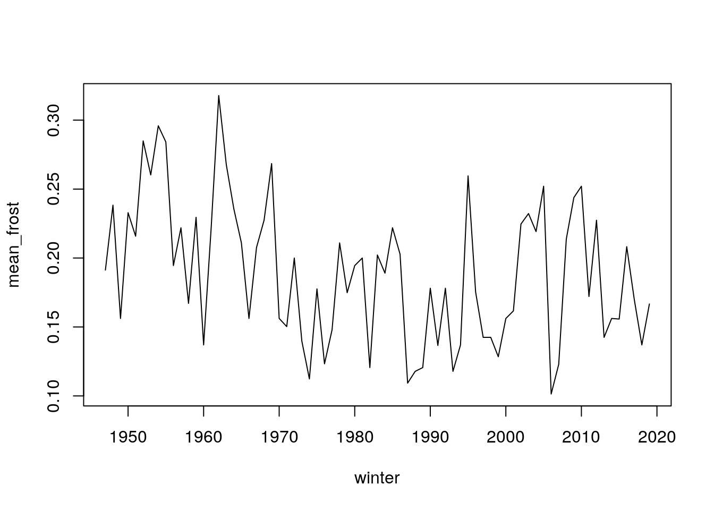
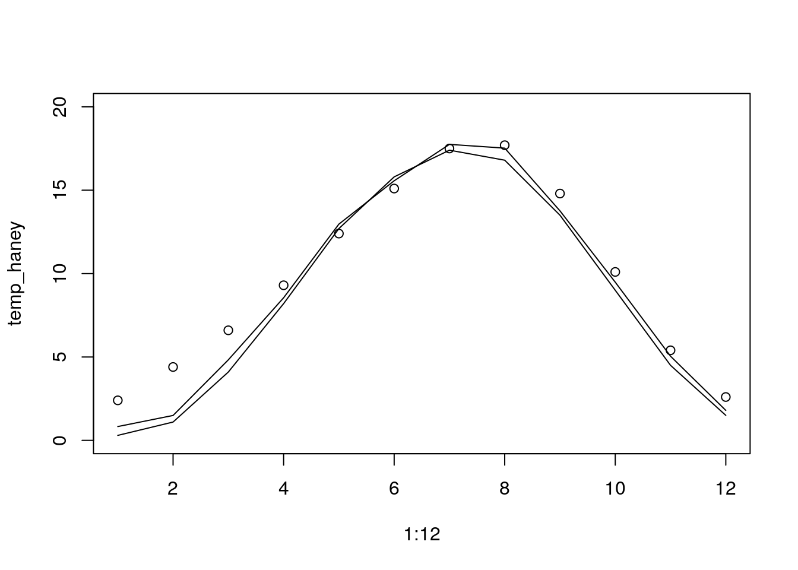
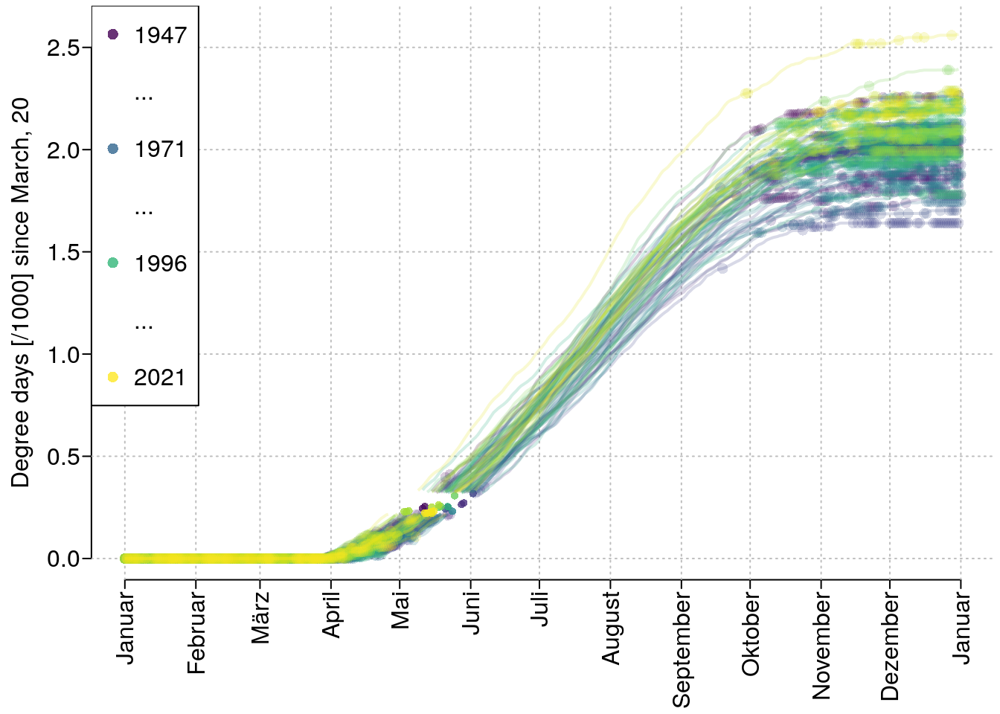
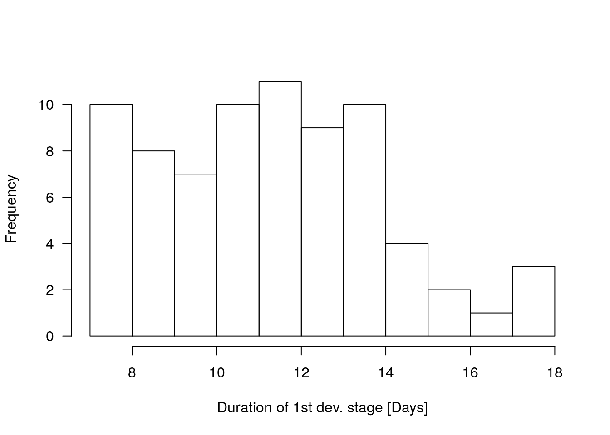
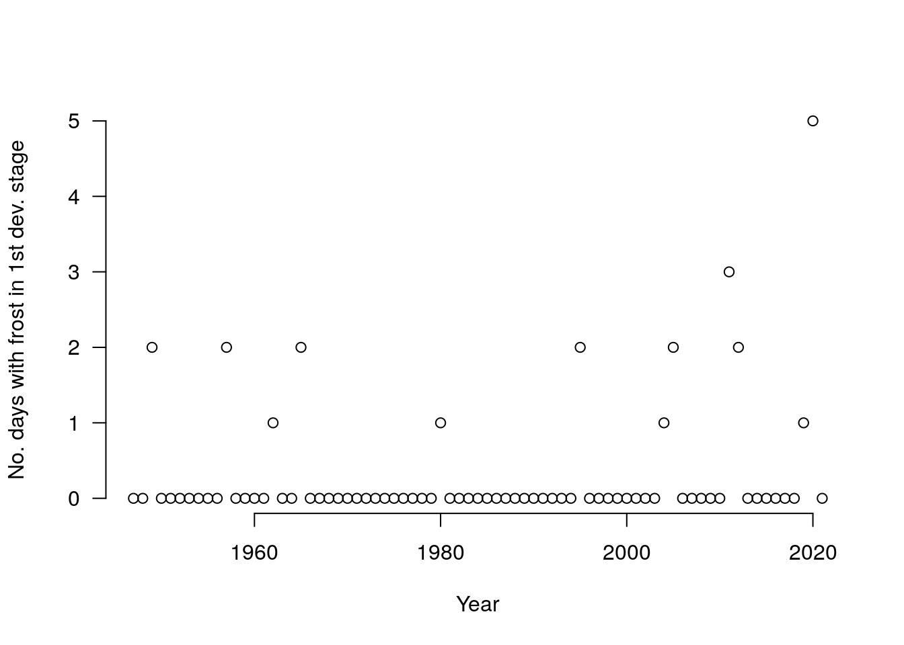
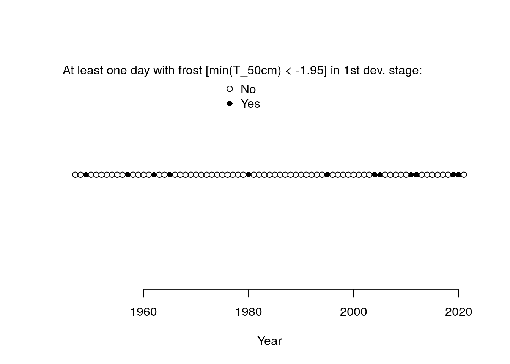
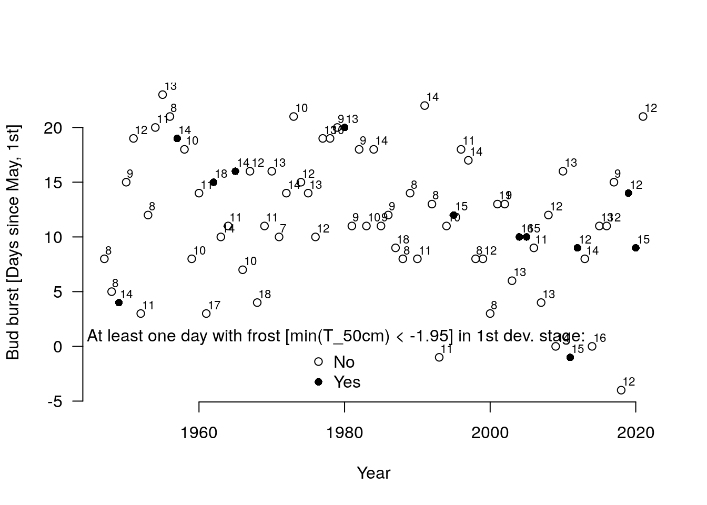

Uncertaintree: Frost data
March 4, 2022 (Version 0.1)
All contents are licensed under CC BY-NC-ND 4.0.
1 Long story short …
Copy-paste-use:
2 Organize R session
3 Data
## For all the functions implemented in `rdwd`, the package web-site is worth
## a visit:
## https://bookdown.org/brry/rdwd/
## We use function `rdwd::nearbyStations` to search for weather stations in a
## circle with a radius of 10km around the city of Göttingen:
m <- nearbyStations(lat = 51.5328, lon = 9.9351, radius = 10,
res = "daily", var = "kl",
mindate = as.Date("2019-12-31"),
statname = "10k Around Goettingen")## Selecting stations...## Preparing URLs...## [1] "data.frame"## [1] "Stations_id" "von_datum" "bis_datum" "Stationshoehe"
## [5] "geoBreite" "geoLaenge" "Stationsname" "Bundesland"
## [9] "res" "var" "per" "hasfile"
## [13] "dist" "url"## Stations_id von_datum bis_datum Stationshoehe geoBreite geoLaenge
## Target NA <NA> <NA> NA 51.5328 9.9351
## 26864 1691 1927-01-01 2021-04-07 167 51.5002 9.9507
## 26865 1691 1927-01-01 2021-04-07 167 51.5002 9.9507
## Stationsname Bundesland res var per hasfile
## Target 10k Around Goettingen <NA> z <NA> <NA> NA
## 26864 Goettingen Niedersachsen daily kl historical TRUE
## 26865 Goettingen Niedersachsen daily kl recent TRUE
## dist
## Target 0.000000
## 26864 3.782262
## 26865 3.782262## Load the historical as well as the recent data, reomve the lines in the
## recent data that are already contained in the historical data and combine
## them into one data-frame object 'df' using the 'rbind' function:
df <- readDWD(file = dataDWD(m$url[2], read = FALSE), fread = FALSE)## rmarkdown::render -> knitr::knit -> call_block -> block_exec -> eng_r -> in_dir -> evaluate -> readDWD -> dataDWD -> dirDWD: adding to directory '/home/hsennhenn/Dropbox/01_oer/01_uncertaintree_materials/DWDdata'## rmarkdown::render -> knitr::knit -> call_block -> block_exec -> eng_r -> in_dir -> evaluate -> readDWD -> dataDWD: 1 file already existing and not downloaded again: 'daily_kl_historical_tageswerte_KL_01691_19270101_20201231_hist.zip'
## Now downloading 0 files...## Reading 1 file with readDWD.data() and fread=FALSE ...## rmarkdown::render -> knitr::knit -> call_block -> block_exec -> eng_r -> in_dir -> evaluate -> readDWD -> dataDWD -> dirDWD: adding to directory '/home/hsennhenn/Dropbox/01_oer/01_uncertaintree_materials/DWDdata'## rmarkdown::render -> knitr::knit -> call_block -> block_exec -> eng_r -> in_dir -> evaluate -> readDWD -> dataDWD: 1 file already existing and not downloaded again: 'daily_kl_recent_tageswerte_KL_01691_akt.zip'
## Now downloading 0 files...## Reading 1 file with readDWD.data() and fread=FALSE ...## [1] "2020-12-31 GMT"## [1] "2020-03-25 GMT"## [1] "2021-09-25 GMT"df <- rbind(df, df_recent)
rm(df_recent) # dump df_recent
## Generate date variables:
df$year <- as.numeric(substr(df$MESS_DATUM, start = 1, stop = 4))
df$month <- as.numeric(substr(df$MESS_DATUM, start = 6, stop = 7))
df$day <- as.numeric(substr(df$MESS_DATUM, start = 9, stop = 10))
df$date <- as.Date(x = paste0(df$year, ".", df$month, ".", df$day),
format = "%Y.%m.%d")
## Generate a 'winter' ID such that all days from - for example - July 2004
## to June 2005 get the value 2004:
df$winter <- df$year
df$winter[which(df$month < 6.5)] <- df$year[which(df$month < 6.5)] - 1
## Considering daily temperatures, we are in especially interested in the following three variables (Reference: [Link](https://s.gwdg.de/bAWmOv)):- TGK: TG \(=\) Minimum der Temperatur in 5 cm über dem Erdboden
- TNK: TN \(=\) Minimum der Temperatur in 2 m über dem Erdboden
- TMK: TM \(=\) Mittel der Temperatur in 2 m über dem Erdboden
So we need to check their availability in df:
plot(xtabs(~ year, data = df), las = 2, bty = "n", xlab = "Year",
ylab = "Measurements per year")
dd <- ddply(df, c("year"), summarise,
n_na_TGK = sum(is.na(TGK)),
n_na_TNK = sum(is.na(TNK)),
n_na_TMK = sum(is.na(TMK)))
lines(dd$year, dd$n_na_TGK, col = rgb(.8, .2, .2), lwd = 2)
lines(dd$year, dd$n_na_TNK, col = rgb(.8, .2, .2), lwd = 2)
lines(dd$year, dd$n_na_TMK, col = rgb(.8, .2, .2), lwd = 2)
legend("topright", col = rgb(.8, .2, .2), lwd = 2, legend = c("# NA"), bg = "white")
Data-quality and quantity seems to be stable starting with the year \(1947\):
## MESS_DATUM TGK TNK TMK
## Min. :1946-01-01 Min. : NA Min. :-17.300 Min. :-12.700
## 1st Qu.:1946-04-02 1st Qu.: NA 1st Qu.: 0.100 1st Qu.: 3.000
## Median :1946-07-02 Median : NA Median : 4.800 Median : 9.800
## Mean :1946-07-02 Mean :NaN Mean : 4.234 Mean : 8.666
## 3rd Qu.:1946-10-01 3rd Qu.: NA 3rd Qu.: 9.300 3rd Qu.: 14.500
## Max. :1946-12-31 Max. : NA Max. : 17.500 Max. : 25.100
## NA's :365There is one NA remaining in TGK:
## STATIONS_ID MESS_DATUM QN_3 FX FM QN_4 RSK RSKF SDK SHK_TAG NM VPM
## 22978 1691 1994-06-29 3 13.0 2.4 10 5.3 6 6.3 0 6.0 21.1
## 22979 1691 1994-06-30 3 8.8 2.4 10 0.0 0 13.5 0 2.7 12.3
## 22980 1691 1994-07-01 3 7.0 2.1 10 0.0 0 12.6 0 3.3 13.2
## 22981 1691 1994-07-02 3 7.8 3.0 10 0.0 0 12.7 0 2.0 16.2
## 22982 1691 1994-07-03 3 5.5 1.5 10 0.0 0 13.3 0 3.3 18.2
## PM TMK UPM TXK TNK TGK eor year month day date winter
## 22978 998.0 21.6 80 29.6 17.8 17.0 eor 1994 6 29 1994-06-29 1993
## 22979 1004.7 16.3 65 22.0 11.5 10.1 eor 1994 6 30 1994-06-30 1993
## 22980 1001.1 17.1 68 24.2 8.6 NA eor 1994 7 1 1994-07-01 1994
## 22981 997.0 20.8 65 27.3 10.1 9.3 eor 1994 7 2 1994-07-02 1994
## 22982 995.5 23.8 63 32.5 13.6 12.7 eor 1994 7 3 1994-07-03 1994This was a day in full summer with no sign of frost at all in this period. Since we are only interested in quantification of the frost potential, it seems completely safe to do the following:
Auxiliary variable lines:
3.1 Definition of frost potential
A first note: It is generally not recommended–or even more some form of bad scientific practice–to ‘cut’ continuosly scaled variables. But here in this frost scenario, it seems justified to think of roles of water in plant cells differently for below or above the \(0\) degree celsius threshold (Sakai and Larcher 1987).
For sensitiviy checking of such a discrete cut value, Hänninen (1996) use several temperature values – \(-10\) degree Celsius to \(-5\) degree Celsius at \(2\)m above ground – for the threshold defining lethal frost.
Sagar and Waterhouse (2018) define severe frost in the context of Douglas-fir regeneration as minimum day temperature below \(-4\) degree Celsius. For this definition, they measured temperatures at several plant heights along a vertical profile.
Hannerz (1994) (p. 248) write: ‘Christersson and von Fircks (1988) showed that new shoots on Norway spruce seedlings were injured when the temperatures around the needles sank below \(-2\) degree C[elsius].’
In our data, we have temperatures at \(5\)cm and at \(200\)cm above ground. Out of convenience, we choose \(50\)cm as a vertical distance above ground in which we can expect to have a relevant part of a plant’s needles. We further stick to the ‘below \(-2\) degree Celsius’ definition for frost that should have some considerable impact–i.e. lead to damages–on the plant’s needles.
df$T_min_50cm <- df$TGK + (.45/1.95) * (df$TNK - df$TGK)
## 'Severe frost'
df$frost <- df$T_min_50cm < -1.95
summary(df$frost)## Mode FALSE TRUE
## logical 22118 5179
tmp <- subset(df, winter > 1946.5 & winter < 2019.5)
dd <- ddply(tmp, c("winter"), summarise, mean_frost = mean(frost))
plot(dd, type = "l")
3.2 Definition of bud burst timing
‘One of the most common problems seen in plantations of Douglas fir seedlings is damage caused by late spring frost, known to be highly correlated with the timing of bud burst.’ (Malmqvist et al. 2017)
‘When the number of accumulated degree days (daily mean temperature[5 °C) reaches a certain threshold, specific for different species of conifers, buds start growing (Grossnickle 2000).’ (Malmqvist et al. 2017)
Based on Thomson and Moncrieff (1982), we could use the following algorithm to estimate yearly bud burst timing for Göttingen: - Start accumulating on March, 20. - If \(\vert \text{TMK} - 4.44\vert > 0\), then: \[ z_{\text{new}} = z_{\text{old}} + TMK - 4.44 \] - Bud burst: first day for which \(z \geq 220\).
However, this algorithm was based on data from plot in Haney, West Canada.
Is this transferable to Göttingen?
We have TMK (TM \(=\) Mittel der Temperatur in 2 m über dem Erdboden) variable included in our data (Link).
Based on TMK, we can calculate monthly averages for period between 1980 and 2010 and compare these to Haney (B.C.), Canada:
## Climate comparison Haney, B.C., vs. Goettingen:
clim <- subset(df, (year > 1979.5) & (year < 2010.5))
dd <- ddply(clim, c("month"), summarise, mean_temp = mean(TMK))
## https://en.wikipedia.org/wiki/Haney,_British_Columbia
temp_haney <- c(2.4, 4.4, 6.6, 9.3, 12.4, 15.1, 17.5, 17.7, 14.8, 10.1, 5.4, 2.6)
prec_haney <- c(227, 178, 158, 133, 111, 91, 66, 60, 86, 161, 266, 250)/2.54
## https://bookdown.org/brry/rdwd/use-case-long-term-climate-graph.html
temp_goe <- c(0.3, 1.1, 4.1, 8.2, 12.7, 15.8, 17.4, 16.8, 13.5, 9, 4.5, 1.5)
prec_goe <- c(44, 38, 39, 40, 54, 65, 73, 64, 47, 47, 46, 49)
plot(1:12, temp_haney, ylim = c(0, 20))
lines(1:12, temp_goe)
lines(1:12, dd$mean_temp)
## ... a rather cautios conclusion:
## with respect to the aims of this "study", we are able to apply
## a) start cumulating degree days from march 20, and
## b) take 220 as threshold
## to the data from Goettingen climate station. This looks rather comparable (?), so let’s apply the algorithm of Thomson and Moncrieff (1982):
4 Some descriptive graphics
res <- data.frame(year = sort(unique(df$year)),
n_days_year = NA,
n_days_frost = NA,
n_days_at_risk = NA,
n_days_frost_and_at_risk = NA,
n_days_frost_and_not_at_risk = NA,
n_days_no_frost_and_at_risk = NA,
n_days_no_frost_and_not_at_risk = NA)
par(mfrow = c(1, 1), mar = c(4.5, 3, 0, 0) + .2, mgp = c(2, .4, 0), tcl = -.3, oma = rep(0, 4))
plot(0:365, seq(0, 2.6, length.out = 366), main = "", type = "n", las = 1, bty = "n", xaxt = "n",
ylab = "Degree days [/1000] since March, 20", xlab = "")
axis(1, at = julian(as.Date(c(paste0("1970-", 1:12, "-01"), "1971-01-01"))),
labels = months(as.Date(c(paste0("1970-", 1:12, "-01"), "1971-01-01"))), las = 2)
abline(v = julian(as.Date(c(paste0("1970-", 1:12, "-01"), "1971-01-01"))), lty = 3, col = "grey")
abline(h = seq(0, 3, by = .5), lty = 3, col = "grey")
paint <- viridis::viridis(n = nrow(res), alpha = .8)
paint_a <- viridis::viridis(n = nrow(res), alpha = .2)
for (index in 1:nrow(res)) {
year_index <- sort(unique(df$year))[index]
sdf <- subset(df, year == year_index)
date_frost <- sdf$date[which(sdf$frost)]
index_a <- which(sdf$z > 220)
index_b <- which(sdf$z < 320)
date_a <- sdf$date[index_a[1]]
date_b <- sdf$date[index_b[length(index_b)]]
rm(index_a, index_b)
res$n_days_year[index] <- nrow(sdf)
res$n_days_frost[index] <- length(date_frost)
res$n_days_at_risk[index] <- as.numeric(date_b - date_a)
res$n_days_frost_and_at_risk[index] <- length(which((date_frost >= date_a) & (date_frost <= date_b)))
res$n_days_frost_and_not_at_risk[index] <- length(which((date_frost < date_a) | (date_frost > date_b)))
res$n_days_no_frost_and_at_risk[index] <- as.numeric(date_b - date_a) - length(which((date_frost >= date_a) & (date_frost <= date_b)))
res$n_days_no_frost_and_not_at_risk[index] <- nrow(sdf) - as.numeric(date_b - date_a) - length(which((date_frost < date_a) | (date_frost > date_b)))
# plot:
tmp <- julian(sdf$date[sdf$z < 220]) - julian(as.Date(paste0(year_index, "-01-01")))
lines(tmp, sdf$z[sdf$z < 220]/1000, lend = 1, lwd = 2, col = paint_a[index])
tmp <- julian(sdf$date[sdf$z > 320]) - julian(as.Date(paste0(year_index, "-01-01")))
lines(tmp, sdf$z[sdf$z > 320]/1000, lend = 1, lwd = 2, col = paint_a[index])
tmp <- julian(sdf$date[(sdf$z >= 220) & (sdf$z <= 320)]) - julian(as.Date(paste0(year_index, "-01-01")))
#lines(tmp, sdf$z[(sdf$z >= 220) & (sdf$z <= 320)]/1000,
# col = 2, lend = 1, lwd = 2)
tmp <- julian(date_frost[which((date_frost >= date_a) & (date_frost <= date_b))])
tmp_a <- tmp - julian(as.Date(paste0(year_index, "-01-01")))
tmp_b <- tmp - julian(as.Date(paste0(year_index - 1, "-12-31")))
# rug(tmp, col = 2)
points(tmp_a, sdf$z[tmp_b]/1000, pch = 16, cex = .7, col = paint[index])
tmp <- julian(date_frost[which((date_frost < date_a) | (date_frost > date_b))])
tmp_a <- tmp - julian(as.Date(paste0(year_index, "-01-01")))
tmp_b <- tmp - julian(as.Date(paste0(year_index - 1, "-12-31")))
# rug(tmp, col = 4)
points(tmp_a, sdf$z[tmp_b]/1000, pch = 16, cex = 1, col = paint_a[index])
}
le <- c(sort(unique(df$year))[1], "", "...", "", sort(unique(df$year))[25], "", "...", "",
sort(unique(df$year))[50], "", "...", "", sort(unique(df$year))[length(paint)])
pa <- c(paint[1], NA, NA, NA, paint[25], NA, NA, NA, paint[50], NA, NA, NA, paint[length(paint)])
legend("topleft", pch = 16, legend = le, col = pa)

5 Another important data-management step towards the final data-frame
sdf <- subset(df, z >= 220)
sdf <- subset(sdf, z <= 320)
dd <- ddply(sdf, c("year"), summarise,
n_frost = sum(frost),
bud_burst = date220[1],
end_1st_dev_stage = date320[1])
dd <- subset(dd, !is.na(n_frost))
dd$may1st <- as.Date(paste0(dd$year, "-05-01"))
dd$begin_julian <- julian(dd$bud_burst, origin = as.Date("1900-01-01")) - julian(dd$may1st, origin = as.Date("1900-01-01"))
dd$end_julian <- julian(dd$end_1st_dev_stage, origin = as.Date("1900-01-01")) - julian(dd$may1st, origin = as.Date("1900-01-01"))
summary(dd)## year n_frost bud_burst end_1st_dev_stage
## Min. :1947 Min. :0.00 Min. :1947-05-09 Min. :1947-05-17
## 1st Qu.:1966 1st Qu.:0.00 1st Qu.:1965-11-11 1st Qu.:1965-11-23
## Median :1984 Median :0.00 Median :1984-05-19 Median :1984-06-02
## Mean :1984 Mean :0.32 Mean :1984-05-12 Mean :1984-05-24
## 3rd Qu.:2002 3rd Qu.:0.00 3rd Qu.:2002-11-09 3rd Qu.:2002-11-20
## Max. :2021 Max. :5.00 Max. :2021-05-22 Max. :2021-06-03
## may1st begin_julian end_julian
## Min. :1947-05-01 Min. :-4.00 Min. : 8.00
## 1st Qu.:1965-10-30 1st Qu.: 8.00 1st Qu.:20.00
## Median :1984-05-01 Median :11.00 Median :24.00
## Mean :1984-04-30 Mean :11.69 Mean :23.47
## 3rd Qu.:2002-10-30 3rd Qu.:16.00 3rd Qu.:28.50
## Max. :2021-05-01 Max. :23.00 Max. :36.006 Some more descriptive graphics

##
## FALSE TRUE
## 63 12plot(dd$y, 0 * dd$y, pch = c(1, 16)[1 + (dd$n_frost > .5)], xlab = "Year", yaxt = "n", ylab = "", bty = "n")
legend("topleft", pch = c(1, 16), legend = c("No", "Yes"),
title = "At least one day with frost [min(T_50cm) < -1.95] in 1st dev. stage:",
bty = "n")
plot(dd$year, dd$bud_burst - dd$may1st, pch = c(1, 16)[1 + (dd$n_frost > .5)], xlab = "Year",
ylab = "Bud burst [Days since May, 1st]", las = 1, bty = "n")
text(dd$year, dd$bud_burst - dd$may1st, labels = dd$end_1st_dev_stage - dd$bud_burst, adj = c(-.1, -.5), cex = .7)
legend("bottomleft", pch = c(1, 16), legend = c("No", "Yes"),
title = "At least one day with frost [min(T_50cm) < -1.95] in 1st dev. stage:",
bty = "n")
7 Final data-frame ‘frost’
## year frost
## Min. :1947 Min. :0.00
## 1st Qu.:1966 1st Qu.:0.00
## Median :1984 Median :0.00
## Mean :1984 Mean :0.16
## 3rd Qu.:2002 3rd Qu.:0.00
## Max. :2021 Max. :1.00References
Hannerz, Mats. 1994. “Predicting the risk of frost occurrence after budburst of Norway spruce in Sweden.” Silva Fennica 28 (4). https://silvafennica.fi/article/5535.
Hänninen, Heikki. 1996. “Effects of Climatic Warming on Northern Trees: Testing the Frost Damage Hypothesis with Meteorological Data from Provenance Transfer Experiments.” Scandinavian Journal of Forest Research 11 (1-4). Taylor; Francis: 17–25. https://doi.org/10.1080/02827589609382908.
Malmqvist, Cecilia, Elisabeth Wallin, Anders Lindström, and Harald Säll. 2017. “Differences in Bud Burst Timing and Bud Freezing Tolerance Among Interior and Coastal Seed Sources of Douglas Fir.” Trees 31: 1–12. https://doi.org/10.1007/s00468-017-1603-x.
Sagar, R.M., and M.J. Waterhouse. 2018. “Interaction between Douglas-fir regeneration and frost in central British Columbia.” Prov. B.C., Victoria, B.C. Tech. Rep., no. 118. www.for.gov.bc.ca/hfd/pubs/Docs/Tr/Tr118.htm.
Sakai, Akira, and Walter Larcher. 1987. “Freezing Injuries in Plants.” In Frost Survival of Plants: Responses and Adaptation to Freezing Stress, 39–58. Berlin, Heidelberg: Springer Berlin Heidelberg. https://doi.org/10.1007/978-3-642-71745-1_3.
Thomson, A. J., and S. M. Moncrieff. 1982. “Prediction of Bud Burst in Douglas-Fir by Degree-Day Accumulation.” Canadian Journal of Forest Research 12 (2): 448–52. https://doi.org/10.1139/x82-069.
Private webpage: uncertaintree.github.io↩